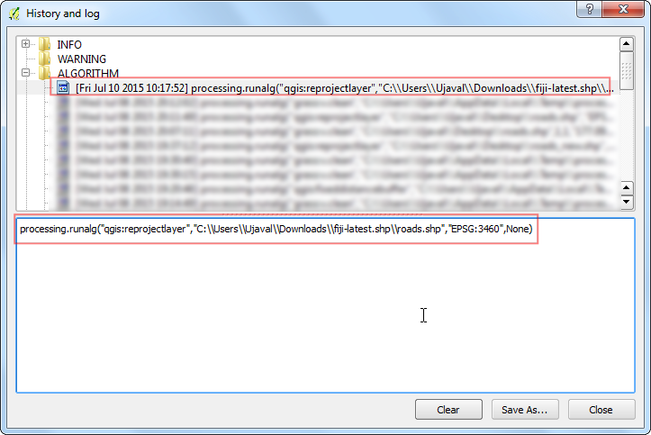
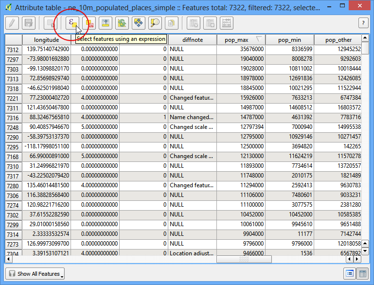

Rularea și programarea Activităților de Prelucrare QGIS
[ Download PDF
A4
Letter ]
Puteți automatiza o mulțime de sarcini în QGIS folosind scriptarea Python (PyQGIS) și cadrul de Procesare. De cele mai multe ori, veți rula manual aceste scripturi, atât timp cât este deschis QGIS. Deși acest lucru este util, de multe ori e nevoie de o modalitate de a rula aceste activități prin intermediul liniei de comandă, fără a fi nevoie de deschiderea QGIS. Din fericire, puteți scrie scripturi python de sine stătătoare, care folosesc bibliotecile QGIS, și care pot fi rulate prin intermediul liniei de comandă. In acest tutorial, vom învăța cum să scriem și să programăm o acțiune care utilizează cadrul de Procesare din QGIS.
Privire de ansamblu asupra activității
Să spunem că lucrăm la unele analize folosind fișierele shape ale unei regiuni. Fișierele shape sunt actualizate zilnic și avem nevoie întotdeauna cel mai recent fișier. Dar înainte de a putea folosi aceste fișiere, trebuie să efectuăm o curățare a datelor. Putem seta o acțiune QGIS care automatizează acest proces, și care rulează zilnic, astfel încât să aveți ultimele fișiere shape curățate. Vom scrie un script Python de sine stătător, care descarcă un fișier shape și rulează operațiuni de curățare topologică o dată pe zi.
Alte competențe pe care le veți dobândi
Descărcarea și dezarhivarea fișierelor folosind Python.
Rularea oricărui algoritm de prelucrare prin PyQGIS.
Repararea erorilor topologice dintr-un strat vectorial.
Procedura
Vom trece mai întâi prin procesul manual de curățare a fișierului shape, pentru a nota comenzile pe care le vom folosi în scriptul python. Lansați QGIS și mergeți la .

Navigați la folderul care conține fișierele shape dezarhivate, apoi selectați fișierul roads.shp și faceți clic pe Open.

În primul rând trebuie să reproiectăm stratul drumurilor, folosind un CRS Proiectat. Aceasta ne va permite să folosim ca unități metrii în locul gradelor, atunci când se va efectua o analiză. Deschideți .

Căutați instrumentul Reproiectare strat. Faceți dublu clic pe el pentru a lansa dialogul.

În dialogul Reproiectare strat, folosiți stratul roads ca Strat de intrare. Vom folosi CRS-ul EPSG:3460 Fiji 1986 / Fiji Map Grid ca CRS Destinație. Clic pe Rulează.

O dată ce procesul s-a încheiat, stratul reproiectat se va încărca în QGIS. Mergeți la .

În dialogul Istoric și Jurnal, expandați folderul Algoritm și selectați ultima intrare. Veți vedea comanda completă de procesare afișată în panoul de jos. Notați această comandă, pentru a o utiliza în script-ul nostru.

Înapoi în fereastra principală a QGIS, faceți clic pe butonul CRS din colțul din dreapta-jos.

În dialogul Proprietățile Proiectului | CRS, bifați Activează transformarea din zbor a CRS-ului, apoi selectați EPSG:3460 Fiji 1986 / Fiji Map Grid ca CRS. Acest lucru vă asigură că straturile noastre originale și cele reproiectate se vor alinia corect.

Acum, vom rula operația de curățare. GRASS având un set foarte puternic de instrumente de curățare topologică. Acestea sunt disponibile în QGIS prin algoritmul v.clean. Căutați acest algoritm în Instrumentarul de Procesare, apoi faceți dublu clic pe el pentru a lansa dialogul.

Puteți citi despre mai multe instrumente diferite și despre opțiunile acestora în fila Ajutor. Pentru acest tutorial, vom folosi instrumentul snap pentru a elimina vertexurile duplicate, care se află cel mult la 1 metru unul față de celălalt. Selectați Stratul reproiectat ca Stratul de curățat. Alegeți snap ca Instrument de curățare. Introduceți 1.00 ca Prag. Lăsați celelalte câmpuri goale și faceți clic pe Rulează.

După ce termină prelucrarea, veți vedea 2 straturi noi adăugate în QGIS. Stratul vectorial curățat este stratul cu erori topologice corectate. Veți avea, de asemenea, un Strat cu erori care va evidenția entitățile care au fost reparate. Puteți utiliza stratul erorilor ca un ghid și să-l măriți, pentru a vedea vertexurile care au fost eliminate.

Mergeți în dialogul și notați comanda de procesare completă, pentru o utilizare ulterioară.

Acum suntem gata să începem codificarea. Vedeți secțiunea unui Editor de Text sau IDE Python în tutorialul Construirea unui Plugin Python pentru instrucțiunile de instalare. Pentru rularea script-urilor python standalone, care utilizează QGIS, trebuie să setați diverse opțiuni de configurare. O modalitate bună de a rula scripturi independente este de a le lansa printr-un fișier .bat. Acest fișier va stabili mai întâi opțiunile de configurare corecte, apoi va apela script-ul python. Creați un nou fișier numit launch.bat și introduceți textul următor. Modificați valorile în funcție de configurația QGIS. Nu uitați să înlocuiți numele de utilizator cu al dvs. în calea către script-ul python. Căile din acest fișier vor fi similare pe sistemul dumneavoastră, cu acelea ale QGIS, dacă l-ați instalat prin Programul de instalare OSGeo4W. Salvați fișierul pe desktop.
Note
Utilizatorii de Linux și Mac trebuie să creeze un script pentru linia de comandă, în scopul stabilirii căilor și variabilelor de mediu.
REM Change OSGEO4W_ROOT to point to the base install folder
SET OSGEO4W_ROOT=C:\OSGeo4W64
SET QGISNAME=qgis
SET QGIS=%OSGEO4W_ROOT%\apps\%QGISNAME%
set QGIS_PREFIX_PATH=%QGIS%
REM Gdal Setup
set GDAL_DATA=%OSGEO4W_ROOT%\share\gdal\
REM Python Setup
set PATH=%OSGEO4W_ROOT%\bin;%QGIS%\bin;%PATH%
SET PYTHONHOME=%OSGEO4W_ROOT%\apps\Python27
set PYTHONPATH=%QGIS%\python;%PYTHONPATH%
REM Launch python job
python c:\Users\Ujaval\Desktop\download_and_clean.py
pause

Creați un nou fișier python și introduceți următorul cod. Denumiți fișierul ca download_and_clean.py, apoi salvați-l pe desktop.
from qgis.core import *
print 'Hello QGIS!'

Comutați la Desktop-ul dvs. și localizați pictograma launch.bat. Faceți dublu clic pe el pentru a lansa o nouă fereastră de comandă și rulați scriptul. Dacă vedeți Hello QGIS! afișat în fereastra de comandă, instalarea și configurarea au fost corecte. Dacă vedeți erori sau nu vedeți textul, verificați fișierul launch.bat și asigurați-vă că toate căile se potrivesc cu locațiile de pe sistemul dumneavoastră.

Înapoi în editorul de text, modificați scriptul download_and_clean.py și adăugați următorul cod. Acesta este codul bootstrap de inițializare a QGIS. El este inutil dacă scriptul se execută din interiorul QGIS. Dar din moment ce îl executăm din afară, este necesar să-l adăugăm la început. Asigurați-vă că înlocuiți numele de utilizator cu al dvs. După efectuarea acestor modificări, salvați din nou fișierul, apoi rulați launch.bat. Dacă apare afișat Hello QGIS!, sunteți gata să adăugați logica de procesare a script-ului.
import sys
from qgis.core import *
# Initialize QGIS Application
QgsApplication.setPrefixPath("C:\\OSGeo4W64\\apps\\qgis", True)
app = QgsApplication([], True)
QgsApplication.initQgis()
# Add the path to Processing framework
sys.path.append('c:\\Users\\Ujaval\\.qgis2\\python\\plugins')
# Import and initialize Processing framework
from processing.core.Processing import Processing
Processing.initialize()
import processing
print 'Hello QGIS!'

Reveniți la prima comandă de prelucrare pe care am salvat-o în jurnal. Aceasta a fost comanda de reproiectare a unui strat. Lipiți comanda pentru script și adăugați codul înconjurător, după cum urmează. Așa cum se observă, comenzile de prelucrare returnează calea către straturile de ieșire sub formă de dicționar. Această valoare este stocată ca ret și afișează calea către stratul reproiectat.
roads_shp_path = "C:\\Users\\Ujaval\\Downloads\\fiji-latest.shp\\roads.shp"
ret = processing.runalg('qgis:reprojectlayer', roads_shp_path, 'EPSG:3460',
None)
output = ret['OUTPUT']
print output

Rulați scriptul, cu ajutorul launch.bat, apoi veți vedea calea către noul strat reproiectat creat.

Acum adăugați codul pentru curățarea topologică. Deoarece acesta este rezultatul nostru final, vom adăuga căile fișierului de ieșire, ca ultimele 2 argumente pentru algoritmul grass.v.clean. Dacă nu le completați, rezultatul va fi creat într-un director temporar.
processing.runalg("grass:v.clean",
output,
1,
1,
None,
-1,
0.0001,
'C:\\Users\\Ujaval\\Desktop\\clean.shp',
'C:\Users\\Ujaval\\Desktop\\errors.shp')

Rulați scriptul și veți vedea 2 fișiere shape nou create pe desktop. Acesta completează partea de procesare a script-ului. Haideți să adăugăm codul pentru a descărca datele de pe site-ul original, și să-l dezarhivăm în mod automat. Vom stoca, de asemenea, calea către fișierul dezarhivat într-o variabilă pe care o putem transmite algoritmului de procesare ulterioară. Va trebui să importăm unele module suplimentare pentru a face acest lucru. (Vedeți sfârșitul tutorialului pentru script-ul complet, cu toate modificările)
import os
import urllib
import zipfile
import tempfile
temp_dir = tempfile.mkdtemp()
download_url = 'http://download.geofabrik.de/australia-oceania/fiji-latest.shp.zip'
print 'Downloading file'
zip, headers = urllib.urlretrieve(download_url)
with zipfile.ZipFile(zip) as zf:
files = zf.namelist()
for filename in files:
if 'roads' in filename:
file_path = os.path.join(temp_dir, filename)
f = open(file_path, 'wb')
f.write(zf.read(filename))
f.close()
if filename == 'roads.shp':
roads_shp_path = file_path

Rulați scriptul finalizat. De fiecare dată când rulați scriptul, o copie proaspătă a datelor va fi descărcată și procesată.

Pentru a automatiza rularea acestui script pe o bază zilnică, putem folosi Programatorul de Sarcini din Windows. Lansați Programatorul de Sarcini și faceți clic pe Creează o Acțiune de Bază.
Note
Utilizatorii de Linux și Mac pot folosi acțiuni cron pentru programarea sarcinilor.

Denumiți sarcina “Descărcare zilnică și Curățare”, apoi faceți clic pe Next.

Selectați Zilnic ca Declanșator, apoi faceți clic pe Next

Selectați o dată pe placul dumneavoastră, apoi faceți clic pe Next.

Selectați Rulează un program ca Intrare, apoi efectuați clic pe Next.

Clic pe Răsfoire și localizați scriptul launch.bat. Clic Next.

Faceți clic pe Finish din ultimul ecran, pentru a planifica sarcina. Acum, scriptul se va lansa automat la ora specificată, pentru a vă oferi zilnic o copie recentă și curată a datelor.

Mai jos este scriptul download_and_clean.py, pentru referința dvs.
import sys
from qgis.core import *
import os
import urllib
import zipfile
import tempfile
# Initialize QGIS Application
QgsApplication.setPrefixPath("C:\\OSGeo4W64\\apps\\qgis", True)
app = QgsApplication([], True)
QgsApplication.initQgis()
# Add the path to Processing framework
sys.path.append('c:\\Users\\Ujaval\\.qgis2\\python\\plugins')
# Import and initialize Processing framework
from processing.core.Processing import Processing
Processing.initialize()
import processing
# Download and unzip the latest shapefile
temp_dir = tempfile.mkdtemp()
download_url = 'http://download.geofabrik.de/australia-oceania/fiji-latest.shp.zip'
print 'Downloading file'
zip, headers = urllib.urlretrieve(download_url)
with zipfile.ZipFile(zip) as zf:
files = zf.namelist()
for filename in files:
if 'roads' in filename:
file_path = os.path.join(temp_dir, filename)
f = open(file_path, 'wb')
f.write(zf.read(filename))
f.close()
if filename == 'roads.shp':
roads_shp_path = file_path
print 'Downloaded file to %s' % roads_shp_path
# Reproject the Roads layer
print 'Reprojecting the roads layer'
ret = processing.runalg('qgis:reprojectlayer', roads_shp_path, 'EPSG:3460', None)
output = ret['OUTPUT']
# Clean the Roads layer
print 'Cleaning the roads layer'
processing.runalg("grass:v.clean",
output,
1,
1,
None,
-1,
0.0001,
'C:\\Users\\Ujaval\\Desktop\\clean.shp',
'C:\Users\\Ujaval\\Desktop\\errors.shp')
print 'Success'